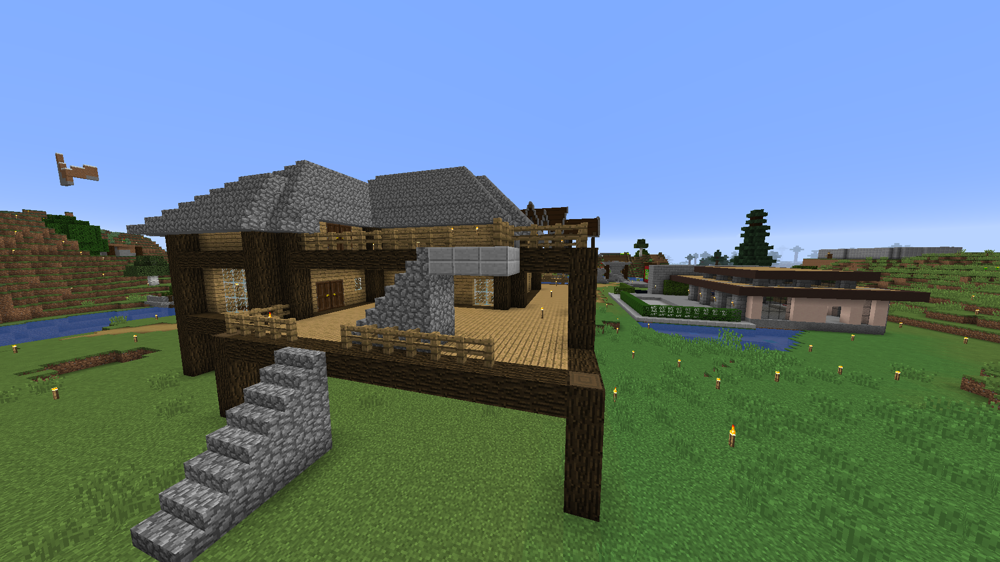

Övriga

Servern har haft flera kortvariga besök av olika personer. Gustaf, Axel Svensson, Axel Boberg, Kelvin, Isak, Emil (kusin), Oskar (kompis till Jesper), Melker, Alexander Jonsson, Gabbe och Rasmus. De har alla varit inne olika länge men de var aldrig inne tillräckligt länge för att ha tillräckligt med information för en egen sida. Axel Svenssons hus
Något om medlemmarna:
Gabbe: Var aktiv ett bra tag. Var bland de första att skaffa en Elytra efter Kalle. Han bodde i berget nära Manfreds hamn.
Rasmus: Var också aktiv ett tag. Han byggde ett färgglatt hus bredvid sin Kirby-pixelart. Han försökte ge sig in i fyrverkerimarknaden men Kalles Creeperfarm var mycket effektivare och därför slutade han sälja.
Resten kom in lite kort och byggde ett eget hus, stort eller litet. De åstakom inte mycket mer än så.